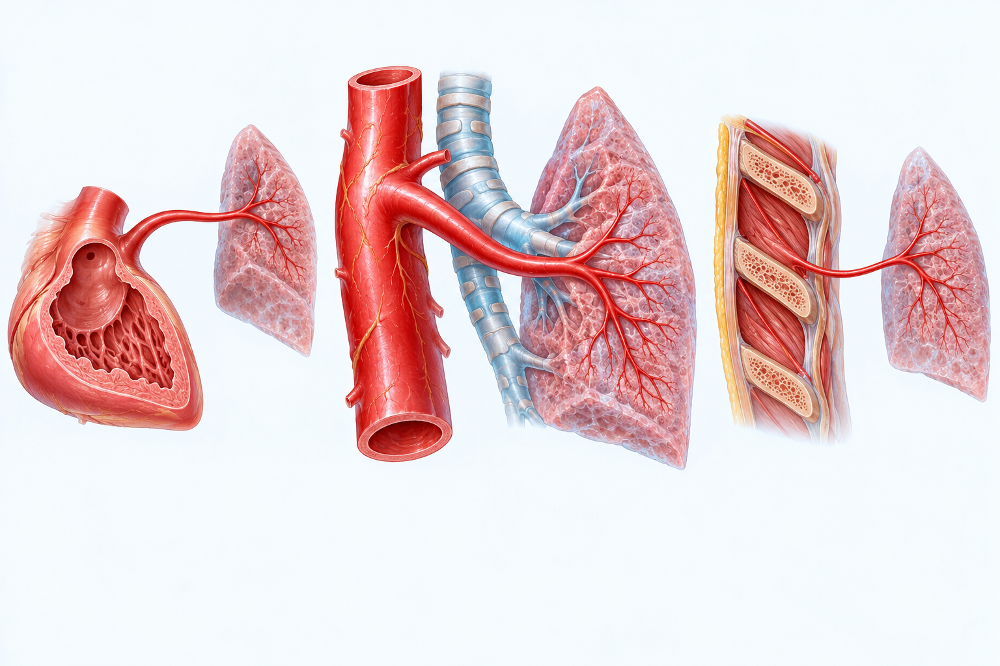
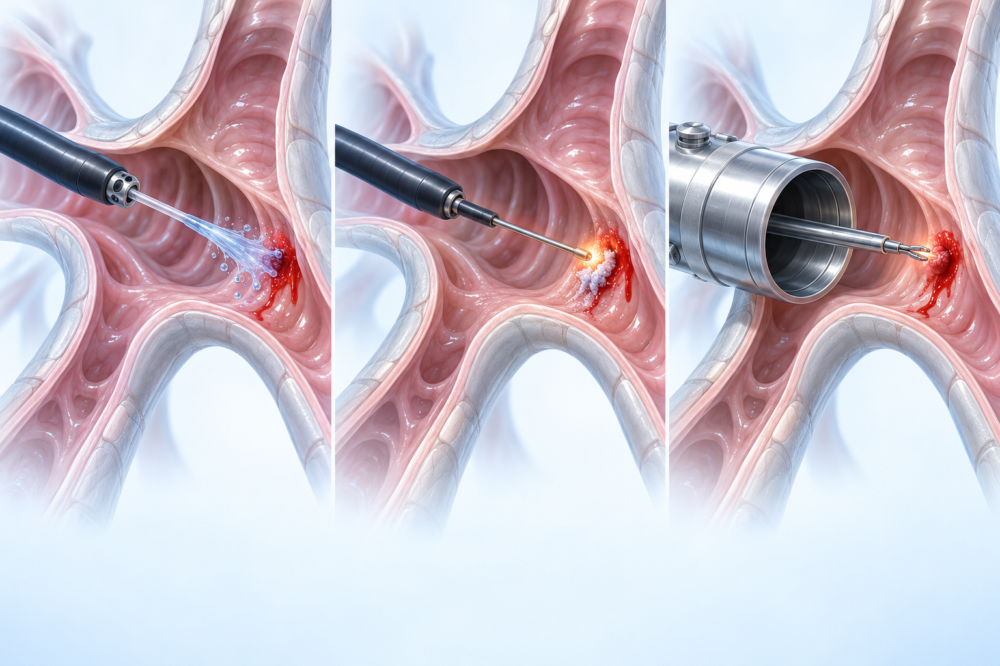
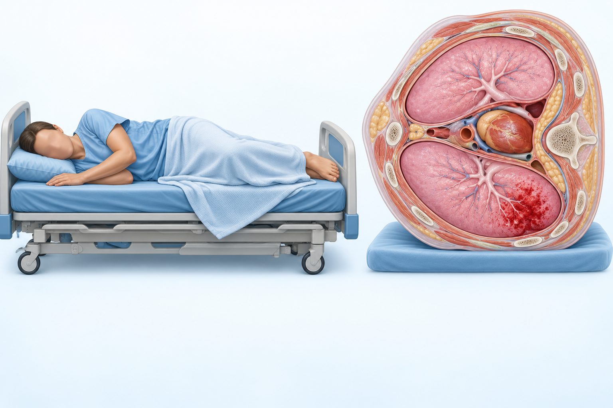
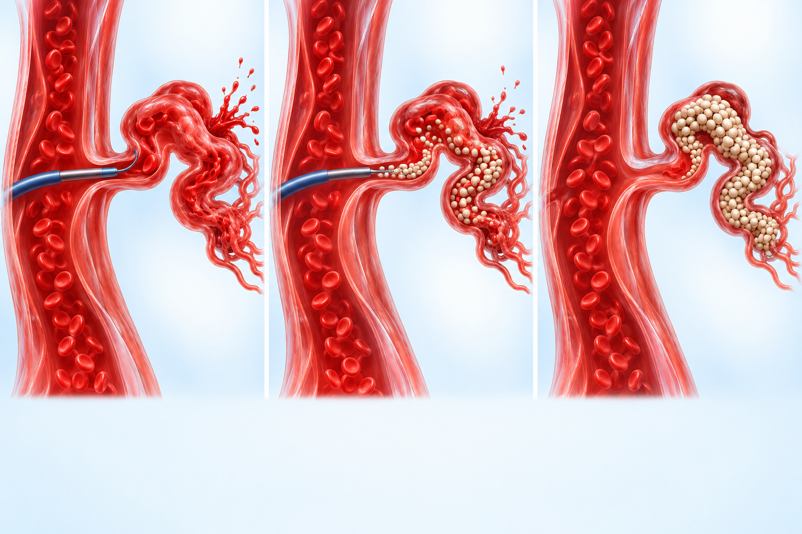

PATIENT EDUCATION · PULMONARY
객혈 때문에
색전술을 권유받았다면
피가 섞인 기침의 원인을 찾는 과정과 색전술이 무엇인지 알아봅니다
입으로 피가 나왔다고 모두 객혈은 아닙니다
 객혈 · 성대 아래에서 나는 출혈
객혈 · 성대 아래에서 나는 출혈 어디서 난 피인지 가리는 것이 먼저입니다기도·폐 조직 → 객혈
어디서 난 피인지 가리는 것이 먼저입니다기도·폐 조직 → 객혈 위·식도(상부 위장관) 출혈
위·식도(상부 위장관) 출혈객혈과 비슷해 보이는 두 가지와 구분합니다
객혈 (기도·폐)위장관 출혈 상기도(입·코·목) 출혈
상기도(입·코·목) 출혈피가 나오는 혈관에 따라 출혈의 속도가 달라집니다
 폐는 혈관 두 갈래에서 피를 받습니다
폐는 혈관 두 갈래에서 피를 받습니다 압력이 높아 갑자기 나빠질 수 있습니다
압력이 높아 갑자기 나빠질 수 있습니다
흔한 원인과 대량 객혈을 일으키는 원인이 조금 다릅니다
가장 흔한 원인 세 가지 결핵도 꼭 살핍니다그 밖의 다양한 원인
결핵도 꼭 살핍니다그 밖의 다양한 원인객혈의 중증도는 경증과 대량으로 나눕니다

피의 양, 속도, 함께 나타나는 증상을 같이 봅니다
위험한 이유는 출혈보다 질식입니다 치료받지 않으면 사망률 50% 이상
치료받지 않으면 사망률 50% 이상병력 청취는 검사만큼 중요한 단서입니다
 출혈의 모습흡연과 동반 질환
출혈의 모습흡연과 동반 질환 함께 있는 증상
함께 있는 증상 출혈이 잘 나는 체질
출혈이 잘 나는 체질 드시는 약혈전 병력
드시는 약혈전 병력나머지 검사는 필요한 환자에게만 더합니다
 피검사(CBC)
피검사(CBC) 신장·간 기능응고 검사
신장·간 기능응고 검사 의심되는 경우에만 더하는 검사
의심되는 경우에만 더하는 검사CT는 치료 계획에도 쓰이는 정보를 줍니다
원인을 짐작하는 소견CT 혈관조영을 함께 하면위내시경과 달리 볼 수 있는 범위가 정해져 있습니다
출혈 기관지가 확인된 뒤에 시도하는 방법입니다
 약제를 출혈 부위에 넣기
약제를 출혈 부위에 넣기
가벼운 객혈과 대량 객혈은 접근이 다릅니다
가장 간단하고 핵심적인 조치가 옆으로 눕는 것입니다

객혈이 반복되거나 많을 때 우선 고려합니다
기관지동맥색전술이란
안정화 → 영상검사 → 내시경 → 색전술 순서입니다
강의에서 제시된 수치이며 개인별로 다릅니다
원인 질환을 함께 살피는 이유입니다
다시 피가 나는 이유색전술 외에 고려하는 치료입니다
 수술은 매우 드뭅니다수술 후 위험이 높아 가급적 미룹니다치료를 기다리는 동안의 다리 역할
수술은 매우 드뭅니다수술 후 위험이 높아 가급적 미룹니다치료를 기다리는 동안의 다리 역할출혈의 정도에 따라 시점이 다릅니다
왼쪽은 꼭 기억하고, 오른쪽은 진료 때 물어보세요
객혈의 정도, 원인, 시술의 효과와 위험을 진료에서 같이 이야기합니다